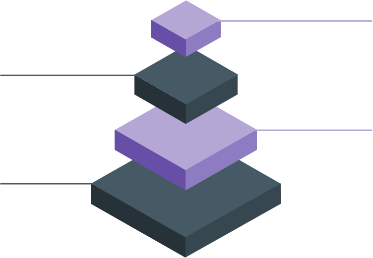

Dicionário de dados
Corpo de um programa
Corpo de um programa
Índice
Introdução
Neste trabalho vamos falar sobre o desenvolvimento da sequência, o tratamento de estrutura de dados e sobre as regras de gestão.
Desenvolvimento da sequência
Um processo de desenvolvimento de software é um conjunto de atividades, parcialmente ordenadas, com a finalidade de obter um produto de software. É estudado dentro da área de Engenharia de Software, sendo considerado um dos principais mecanismos para se obter software de qualidade e cumprir corretamente os contratos de desenvolvimento, sendo uma das respostas técnicas adequadas para resolver a crise do software.

Tratamento de estrutura de dados
O tratamento abrange um amplo conjunto de operações efetuadas sobre dados pessoais, por meios manuais ou automatizados. Inclui a recolha, o registo, a organização, a estruturação, a conservação, a adaptação ou alteração, a recuperação, a consulta, a utilização, a divulgação por transmissão, difusão ou qualquer outra forma de disponibilização, a comparação ou interconexão, a limitação, o apagamento ou a destruição de dados pessoais.
Regras de gestão
Trabalho
Um trabalho é uma posição dentro de uma organização e geralmente é definido na descrição do trabalho, que descreve o que se espera da pessoa que irá desempenhar tal trabalho e suas habilidades e atributos.
Função
Dentro de cada trabalho, há pelo menos uma função a ser assumida. No gerenciamento de projetos e programas, geralmente há várias funções associadas a cada trabalho, dependendo das necessidades e da fase do ciclo de vida do programa.
Responsabilidades
Para cada função assumida, existe um conjunto de responsabilidades associadas. No entanto, nem todas as responsabilidades associadas precisam ser satisfeitas em todas as ocasiões. As responsabilidades exigidas variam dependendo do tipo de iniciativa e do momento dentro do ciclo de vida do programa.
Conclusão
Um processo de desenvolvimento de software é um conjunto de atividades, parcialmente ordenadas, com a finalidade de obter um produto de software. O tratamento abrange um amplo conjunto de operações efetuadas sobre dados pessoais, por meios manuais ou automatizados. As regras de gestão dividem-se em trabalho, função e responsabilidades.
Estrutura de um programa
Princípios do método
Princípios do método
Índice
Introdução
Neste trabalho vamos falar sobre a teoria dos conjuntos aplicada aos dados, vamos também mostrar a representação gráfica dos conjuntos e as operações dos conjuntos. Em relação aos dados iremos falar sobre os dados agrupados em conjunto e sobre a entrada e saída de dados.
Teoria dos conjuntos aplicada aos dados
Na teoria dos tipos, os conjuntos são geralmente identificados com sua função de indicador (função característica): consequentemente, um conjunto de valores de tipo A pode ser denotado por 2A ou P(A). (Subtipos e subconjuntos podem ser modelados por tipos de refinamento , e conjuntos de quocientes podem ser substituídos por setoides.) A função característica F de um conjunto S é definido como:
Em teoria, muitas outras estruturas de dados abstratas podem ser vistas como estruturas de conjunto com operações adicionais e / ou axiomas adicionais impostos às operações padrão. Por exemplo, um heap abstrato pode ser visto como uma estrutura definida com uma operação que retorna o elemento de menor valor. min(S)
Representação gráfica dos conjuntos
Matriz de adjacência
Lista de adjacênciaConjunto teórico-núcleo
Pode-se definir as operações da álgebra de conjuntos com:
- union(S,T): Retorna a união de conjuntos S e T.
- intersection(S,T): Retorna a intersecção de conjuntos S e T.
- difference(S,T): Retorna a diferença de conjuntos S e T.
- subset(S,T): Um predicado que testa se o conjunto S é um subconjunto do conjunto T.
Conjunto estático
As operações típicas que podem ser fornecidas por uma estrutura de conjunto estático S são:
- is_element_of(x,S): Verifica se o valor x está no conjunto S.
- is_empty(S): verifica se o conjunto S está vazio.
- size(S)ou : devolve o número de elementos em S .cardinality(S).
- iterate(S): retorna uma função que retorna mais um valor de S em cada chamada, em alguma ordem arbitrária.
- enumerate(S): retorna uma lista contendo os elementos de S em alguma ordem arbitrária.
- build(x1,x2,…,xn,): cria uma estrutura de conjunto com valores x 1 , x 2 , ..., x n.
- create_from(collection): cria uma nova estrutura de conjunto contendo todos os elementos da coleção fornecida ou todos os elementos retornados pelo iterador fornecido.
Conjunto dinâmico
Estruturas de conjuntos dinâmicos normalmente adicionam:
- create(): cria uma nova estrutura de conjunto inicialmente vazia.
- create_with_capacity(n): cria uma nova estrutura de conjunto, inicialmente vazia, mas capaz de conter até n elementos.
- add(S,x): adiciona o elemento x a S , se ainda não estiver presente.
- remove(S, x): remove o elemento x de S , se estiver presente.
- capacity(S): retorna o número máximo de valores que S pode conter.
Conjunto adicional
Existem muitas outras operações que podem (em princípio) ser definidas nos termos acima, tais como:
- pop(S): Retorna um elemento arbitrário de S, eliminando-o a partir de S.
- pick(S): Retorna um elemento arbitrário de S. Funcionalmente, o mutador poppode ser interpretado como o par de seletores (pick, rest),onde restretorna o conjunto constituído por todos os elementos exceto o elemento arbitrário. Pode ser interpretado em termos de iterate.
- map(F,S): Devolve o conjunto de valores distintos resultantes de aplicar a função F a cada elemento de S.
- filter(P,S): Retorna o subconjunto que contém todos os elementos de S que satisfazem um dado predicado P .
- fold(A0,F,S): retorna o valor A | S | depois de aplicar para cada elemento e de S, para alguma operação binária F. F deve ser associativo e comutativo para que seja bem definido. Ai+1 := F(Ai, e).
- clear(S): Eliminar todos os elementos de S.
- equal(S1', S2'): verifica se os dois conjuntos fornecidos são iguais (ou seja, contêm todos e apenas os mesmos elementos).
- hash(S): retorna um valor hash para o conjunto estático S de modo que se então equal(S1, S2)hash(S1) = hash(S2).
Conjunto adicional
Outras operações podem ser definidas para conjuntos com elementos de um tipo especial:
- sum(S): retorna a soma de todos os elementos de S para alguma definição de "soma". Por exemplo, em números inteiros ou reais, pode ser definido como .fold(0, add, S).
- collapse(S): dado um conjunto de conjuntos, retorna a união. Por exemplo collapse({{1}, {2, 3}}) == {1, 2, 3},. Pode ser considerado uma espécie de sum.
- nearest(S,x): retorna o elemento de S que é o mais próximo em valor de x (por alguma métrica ).
- flatten(S): dado um conjunto que consiste em conjuntos e elementos atómicos (elementos que não são conjuntos), retorna um conjunto cujos elementos são os elementos atómicos do conjunto de nível superior original ou elementos dos conjuntos que ele contém. Em outras palavras, remova um nível de aninhamento - como, collapse,mas permite átomos. Isso pode ser feito uma única vez ou nivelando recursivamente para obter um conjunto de apenas elementos atómicos. Por exemplo flatten({1, {2, 3}}) == {1, 2, 3}.
- min(S): Retorna o elemento mínimo / máximo de S .max(S).
Dados agrupados em conjuntos
Dados agrupados são dados formados pela agregação de observações individuais de uma variável em grupos, de modo a que uma distribuição de frequência destes grupos sirva como um meio conveniente para resumir ou analisar os dados.
Existem dois tipos principais de agrupamento: agrupamento de dados de uma variável unidimensional, substituindo números individuais por contagens em caixas; e agrupamento de variáveis multidimensionais por algumas das dimensões (especialmente por variáveis independentes), obtendo a distribuição de dimensões não agrupadas (especialmente as variáveis dependentes).
Entrada e saída de dados
pEntradas e saídas são a comunicação do programa com o mundo real, a forma com que o programa recebe os dados a serem processados do mundo real e devolve a este a resposta.
A entrada pode ser feita pelo teclado, mouse, arquivos de texto - através do redirecionamento da entrada padrão e de outros dispositivos físicos de Entrada.
A saída pode ser feita no vídeo, na impressora, arquivos texto - através do redirecionamento da saída padrão, e de outros dispositivos de Saída.
Conclusão
Na teoria dos tipos, os conjuntos são geralmente identificados com sua função de indicador. As operações sobre conjuntos são: operações de conjunto teórico-núcleo, conjuntos estáticos, conjuntos dinâmicos e operações adicionais.
Dados agrupados são dados formados pela agregação de observações individuais de uma variável em grupos. Entradas e saídas de dados são a comunicação do programa com o mundo real.
Metodologia em programação local
Princípios Metodológicos de Programação
Índice
- Introdução
- Evolução
- Metodologia Ágil
- Scrum
- Kanban
- Cascata
- Lean
- Programação orientada por objeto
- Os seus 4 pilares: Abstração
- Os seus 4 pilares: Encapsulamento
- Os seus 4 pilares: Herança
- Os seus 4 pilares: Polimorfismo
- Conclusão
Introdução
Neste trabalho vamos falar sobre a evolução das metodologias de programação, quais são os tipos e as suas vantagens e desvantagens. O que é programação orientada por objeto e os seus 4 pilares.
Evolução
Em meados da primeira guerra mundial tivemos uma evolução significativa no segmento corporativo.
Nesta época o mundo passava por intensas transformações e isto provocou drásticas mudanças no ciclo produtivo das empresas e percebeu-se a necessidade de controlar o seu processo de trabalho.
Com a criação dos computadores comerciais após a segunda guerra mundial tivemos um aumento significativo na dinamização da indústria de computadores e, consequentemente, o processo de construção de softwares, para que os mesmos automatizassem processos manuais e pudessem avaliar situações complexas que são parte integrante do cotidiano das organizações.
E a partir desse cenário, criou-se modelos de desenvolvimento de softwares que atendessem a determinadas necessidades específicas e ao mesmo tempo pudessem ser utilizados na elaboração softwares sem grandes complexidades.
Metodologia Ágil
Trata-se de uma metodologia de desenvolvimento de software com foco no próprio projeto ou produto.
Ela visa a realização de melhorias e alterações constantes, baseadas no feedback dos usuários, dos próprios clientes e até do time interno de criação.
Sem estruturas rígidas, o processo visa períodos curtos de desenvolvimento, para que os resultados e seus respetivos feedbacks sejam obtidos de maneira rápida.
Scrum
O método Scrum funciona como uma etapa adicional da Metodologia Ágil. Seu objetivo é ter mais produtividade nos processos.
Seus recursos incluem a criação de listas sobre os trabalhos pendentes, reuniões diárias para discutir a direção e o progresso do projeto, sessões de planejamento para pendências futuras e reflexões sobre os meios de resolução de pendências anteriores.
Kanban
O desenvolvimento Kanban é excelente para equipes que recebem muitos pedidos, que por sua vez variam muito em termos de tamanho e prioridades.
Isso porque o método permite uma melhor visualização do trabalho e limitação das atividades em andamento, mudando com agilidade os processos ainda em realização para concluídos. Nele, as atualizações já são liberadas assim que estiverem prontas, sem a necessidade de uma programação regular com datas de vencimento bem delimitadas. Assim, não existe um período fixo para a entrega das tarefas.
Cascata
Considerada oposta à Metodologia Ágil, a abordagem em Cascata visa a adoção de controles e processos lineares muito rigorosos.
Nela, uma nova etapa só pode ser começada quando as anteriores forem concluídas, para que as ações sejam orientadas gradualmente até as próximas responsabilidades previstas.
Lean
O conceito Lean diz respeito ao desenvolvimento enxuto de um projeto, que se concentra principalmente na diminuição de suas perdas.
Nele, o valor a ser gerado para os clientes é o principal ponto de todas as atividades. Ou seja, se determinada ação vale a pena, ela deve ser realizada imediatamente. Se não for o caso, ela deve ser removida.
Com isso, todo o projeto é examinado minuciosamente já em sua fase inicial, visando a remoção de etapas que podem comprometer o tempo ou os recursos para a sua realização. O feedback também tem suma importância nessa fase.
PROGRAMAÇÃO ORIENTADA POR OBJETOS
Programação orientada por objetos é um paradigma de programação baseado no conceito de "objetos", que podem conter dados na forma de campos, também conhecidos como atributos, e códigos, na forma de procedimentos, também conhecidos como métodos.
Os seus 4 pilares
1- Abstração
São três pontos que devem ser levados em consideração nessa abstração.
1- Identidade ao objeto que iremos criar. Essa identidade deve ser única dentro do sistema para que não haja conflito. Na maior parte das linguagens, há o conceito de pacotes (ou namespaces).
2- As características do objeto. Como sabemos, no mundo real qualquer objeto possui elementos que o definem. Dentro da programação orientada a objetos, essas características são nomeadas propriedades. Por exemplo, as propriedades de um objeto “Cão” poderiam ser “Tamanho”, “Raça” e “Idade”.
3- Definir as ações que o objeto irá executar. Essas ações, ou eventos, são chamados métodos. Esses métodos podem ser extremamente variáveis, desde “Acender()” em um objeto lâmpada até “Miar()” em um objeto gato.
Os seus 4 pilares
2- Encapsulamento
Trata-se de um dos elementos que adiciona segurança à aplicação em uma programação orientada a objetos pelo fato de esconder as propriedades.
A maior parte das linguagens orientadas a objetos implementam o encapsulamento baseado em propriedades privadas, ligadas a métodos especiais chamados getters e setters, que irão retornar e setar o valor da propriedade, respetivamente. Essa atitude evita o acesso direto a propriedade do objeto, adicionando uma outra camada de segurança à aplicação.
Os seus 4 pilares
3- Herança
O objeto abaixo na hierarquia irá herdar características de todos os objetos acima dele, seus “ancestrais”. A herança a partir das características do objeto mais acima é considerada herança direta, enquanto as demais são consideradas heranças indiretas. Por exemplo, na família, a criança herda diretamente do pai e indiretamente do avô e do bisavô.
Os seus 4 pilares
4- Polimorfismo
Na natureza, vemos animais que são capazes de alterar sua forma conforme a necessidade, e é dessa ideia que vem o polimorfismo na orientação a objetos. Como sabemos, os objetos filhos herdam as características e ações de seus “ancestrais”. Entretanto, em alguns casos, é necessário que as ações para um mesmo método seja diferente.
Por exemplo, temos um objeto “Eletrodoméstico”. Esse objeto possui um método, ou ação, “Ligar()”. Temos dois objetos, “Televisão” e “Frigorifico”, que não irão ser ligados da mesma forma. Assim, precisamos, para cada uma das classes filhas, reescrever o método “Ligar()”.
Conclusão
Os tipos de metodologias são: metodologia ágil, Scrum, Kanban, Cascata e Lean.
As principais vantagens são: na metodologia ágil os eventuais problemas do software podem ser corrigidos ainda em seu estágio inicial, Scrum a capacidade da equipe em identificar e corrigir desafios emergentes, Kanban toda a equipe se torna responsável pela tomada de decisões, Cascata impõe uma sequência restrita e bem dimensionada de tarefas, Lean todo o projeto é examinado minuciosamente já em sua fase inicial.
A programação orientada por objeto é um paradigma de programação baseado no conceito de "objetos“. Os seus 4 pilares são: abstração, encapsulamento, herança, polimorfismo.